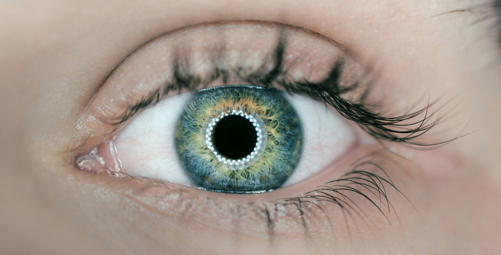

L'iris, la dada biomètrica de moda?
Vendre l'iris per vint-i-cinc criptomonedes està de moda entre alguns joves. L'empresa Worldcoin, impulsada pel pare de ChatGPT, Sam Altman, ha implantat a Espanya una trentena de botigues en les quals s'escanegen els ulls mitjançant un dispositiu anomenat Orb. Fer-ho té premi; es donen una sèrie de tokens o monedes virtuals a canvi. El principal perill de facilitar l'iris és que és una dada biomètrica que permet la identificació unívoca i pot associar-se amb informació sensible, com ara l'estat de salut d'una persona
, explica Eduard Blasi, professor col·laborador dels Estudis de Dret i Ciència Política de la Universitat Oberta de Catalunya (UOC).
Les cues són llargues a les ciutats on Worldcoin té presència i, segons la mateixa empresa, ja són més de 360.000 els espanyols que han venut el seu iris. La preocupació ve pel lliurament d'informació privada que ens identifica. A diferència de les contrasenyes, que es poden canviar en cas de problemes, els nostres trets oculars romanen inalterables
, explica Jordi Serra, professor dels Estudis d'Informàtica, Multimèdia i Telecomunicació de la UOC i investigador del grup de recerca KISON. El procediment de venda és senzill; a través de l'escaneig de l'iris, es genera un codi únic anomenat irishash que identifica cada usuari. De la mateixa manera que la forma de caminar o la veu són dades biomètriques, l'iris és una dada molt estable i es manté intacta, o pràcticament intacta, durant el transcurs de la vida. Si els números que representen els nostres iris són compromesos o comercialitzats, ens enfrontem a un dilema, ja que són immodificables
, adverteix Serra.
Segons Blasi, l'ús d'aquest tipus de dades té una doble vessant, positiva i negativa: Són dades molt fiables, que donen menys errors i falsos positius, en tractar-se d’una dada biomètrica que es manté intacte durant el transcurs del temps. A la vegada, en cas de sostracció d'aquesta informació (un hackeig, un ciberatac o una extracció per part d'un tercer no autoritzat), aquesta dada no pot ser modificada en un futur (com podria fer-se amb una contrasenya compromesa) i, per tant, el dany que se'ns podria ocasionar podria perpetuar-se en el temps
.
Tenir un passaport d'humanitat per distingir-nos de la IA
Segons Worldcoin, l'objectiu és aconseguir registrar l'iris de tota la població mundial perquè sigui més fàcil poder distingir si l'avatar amb qui es parla a Internet és realment una persona o fruit de la intel·ligència artificial. Confirmar aquesta identitat permet tenir el que ells consideren com un passaport d'humanitat. La setmana passada, el nombre total d'iris capturats arreu del món era de 3,6 milions, amb registres en 36 països. Serra adverteix:
Si els sistemes que emmagatzemen la informació codificada són vulnerables i els ciberdelinqüents poden relacionar les dades guardades amb una persona, tindrien la capacitat de suplantar-ne la identitat.
Per això, el rigor en la custòdia per part de les empreses que processin aquesta informació és el punt clau. El tractament d'aquesta dada s'ha de reservar exclusivament per als casos en què sigui realment necessària i no hi hagi cap altra manera menys intrusiva d'arribar a la finalitat que es pretén assolir
, adverteix Blasi. De fet, l'Agència Espanyola de Protecció de Dades (AEPD) està analitzant quatre denúncies relacionades amb el tractament de dades per part d'aquesta empresa i el seu símil a Alemanya. Altres països com França, Argentina o Kenya també ho investiguen. L'empresa es defensa afirmant que el codi numèric no està relacionat amb una persona, però hi ha recel respecte de la gestió d'aquestes dades personals. Hi ha dubtes, sobretot amb el processament de la imatge. No se sap exactament quina és la informació que s'extreu, si realment s'anonimitza de manera no reversible i si es pot garantir la irreversibilitat en un futur
, explica Blasi, que afegeix: D'altra banda, tampoc se sap exactament si es reutilitzarà aquesta informació en un futur, si hi haurà cap ús o interès comercial darrere de tot això més enllà del projecte que proposen
.
El worldcoin hi surt guanyant
De moment, la criptomoneda worldcoin, la contraprestació que reben les persones que venen el seu iris, està pujant de preu. Aquesta pràctica es coneix com a consentiment incentivat. No és contrari a la normativa de protecció de dades rebre una compensació econòmica, ja sigui un producte o un avantatge, per estimular aquest consentiment
, explica Blasi. El seu valor ha passat de 2,43 euros (de mitjana els últims 8 mesos) per unitat a principis de febrer a 8,57 euros dijous passat. Això implica que s'ha passat de cobrar 60 euros per donar l'iris a rebre'n 214 per vendre la criptomoneda.
En cas de fer-se enrere, hi ha la possibilitat de recuperar les dades: Amb el Reglament europeu de protecció de dades a la mà, sí
, confirma Blasi, divulgador del canal TechandLaw (premi AEPD 2023). Existeix i resulta d'aplicació el principi d’extraterritorialitat que assegura que les dades dels europeus viatgin amb els seus drets, és a dir, en el cas que OpenAI tingui els seus centres de processament de dades als Estats Units, no hauria de ser cap impediment perquè els ciutadans europeus puguin exercir els seus drets en temes de protecció de dades
, confirma l'expert. Així, recuperar les dades és factible, i exercir el dret de supressió o el dret d'oposició al tractament està inclòs en la normativa europea de protecció de dades, a més s’obliga a les empreses a complir la norma actual siguin on siguin si tracten dades europees.